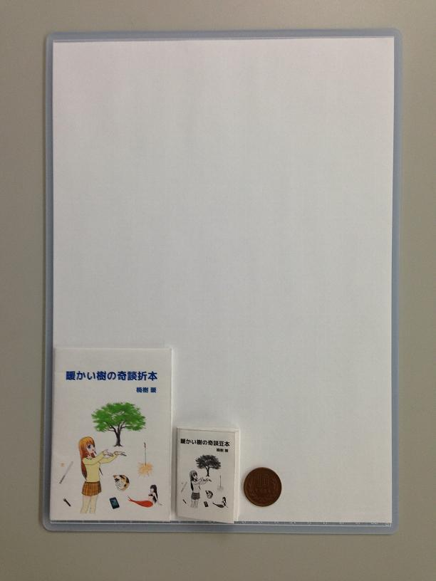

| 世界の滅亡と色彩を持たないディストピア | |
| 楠樹 暖 | |
| oritoyo shuppan (2014) | |
世界の滅亡と
色彩を持たないディストピア
楠樹 暖
織豊出版
世界の滅亡
フハハハハ、ついに人類滅亡のシナリオが完成したぞ！
まずは手始めに......人類滅亡の序曲を誰か作曲してくれないかなぁ？
あ、あと人類滅亡のキャラを書いてくれる絵師さんも絶賛募集中！
「ねぇ、今度の週末、ドライブに行かない？」
「ゴメン、その日は大事な用事が入っているんだ」
「じゃあ、また今度ね」
......今度があればいいけどね。
約束の日、私は終末ドライブを稼働させた。世界は滅亡のカウントダウンを始めた。
（完）
かつて家があった場所に帰ってきた。
瓦礫と化した家財を視界から外したくて、僕らは自然と空を見上げていた。
電気の来ない町は星が綺麗だ。
「知ってる？ 一等星、二等星の等星って、英語でマグニチュードって言うんだって」
瞳に映る星がユラユラと滲んでいき、涙が頬を伝った。
（完）
滅亡しなかった世界の人類は、滅亡した世界の人類の分まで生きなければならない。それが残されたものの義務である。
「滅亡した人類の抜けた穴の分、みなさんに頑張ってもらいます。今日からは、一日最低十六時間労働でお願いします」
世界おわった......。
（完）
「ねぇ、朝食のタマゴ、ゆで卵と目玉焼きとドッチにする？」
「あー、どっちでもイイヨー」
キィー、信じられない。滅亡の日の最後の朝食なのにドッチでもイイなんて。エイッ！ エイッ！ こうしてやる！
――スクランブルエッグが出来上がりました。
（完）
寂れた村で井戸を掘っていたら温泉が出てきた。温泉客で村は賑わった。
更に掘ると今度は石油が出てきた。村は潤い、人口も増えて町になった。
更に掘ると堅いコンクリートで覆われた箱が出てきた。箱を突き破ると中から負の遺産が溢れ出してきた。
今度は希望すら残らない。
（完）
滅亡エッグが塀の上を歩いていたら、誤って落ちて殻にヒビが入ってしまった。
それを聞いた王様はすかさず駆けつけこう言った。
「自分の殻を打ち破るんだ！ 自分の内面をさらけ出すんだ！」
「裸の王様には言われたくないわ」
世界は滅亡の危機に瀕していた。
（完）
「今でこそ創造神と呼ばれちゃいるが、若い頃は散々滅亡させて回ったもんさ。ほら、これをお前に託すぜ」
ブラフマーは、ひとつの卵をシヴァに渡した。
「こ、これはヒラニヤ・ガルバ!? 」
「今度はお前が世界を滅亡させる番だ」
「でも、これ無精卵ですよ」
（完）
魔法少女ヘリカルあんてな、彼女のアホ毛が反応した。困っている人を察知する魔法の触覚だ。
魔法の水晶を振動させた周波数でチャンネルを合わせる。大いなる宇宙の意志からの警告だ。
悔い改めないと人類が滅亡する！
魔法少女ヘリカルあんてな、彼女はコイルくるくるの電波ガールだ！
（完）
一日に千人殺す終末の怪物が現れた。
手始めに日本。一億二千万人を殺すのに三百年以上かかった。
次に世界。七十億人殺すのに二千年年弱かかってしまった。
ちょっと人類多すぎ。
（完）
世界の滅亡は、『色』の消失から始まった。
次々と色彩を失い、モノクロの風景へと移りゆく世界。色々なモノは空虚なモノへと変貌した。
色即是空 、空即是色 。やがて世界は一切の色を無くし、空 へと還った。
（完）
「フフフ、この毒を貯水池に流せばコノ辺りの都市は壊滅だ」
「そうはさせんぞ！」
正義の味方が戦闘員をなぎ倒して怪人を追いつめる。
「フフフ、まんまと騙されたな。この毒は偽物だ」
「なんだと！」
「フフフ、本物はお前が池にたたき落とした戦闘員だ。生のカキを食べさせたからな」
（完）
「あっ！ やっべー、このカレンダー今日までジャン。新しいの用意しなきゃ。でも作るのメンドーなんだよな。高度な天文学の知識が必要で、計算難しいし」
「いい手があるよ」
「何？」
「世界の方を滅ぼしちゃう」
......ニヤリ。
（完）
交差点に差し掛かると急にゾワゾワした。
原因は分かっている。平行世界の僕が死んだのだ。
数秒後、車が横切った。あれに轢かれたんだな。
ゾワゾワはこの世界と似ていれば似ているほど衝撃が大きい。
ドーンと過去最大級の衝撃が走った。僕以外の平行世界の僕がゾワゾワした。
（完）
前を歩いている人を追い抜こうとすると必ず対向から人が来て、すれ違うときには三人並ぶ。
速度調整しても八割の確率でそうなる。
誰が作ったか知らないが、この世界はそう出来ているのだろう。
こんな世界を変えることにした。
今では誰ともすれ違わない。他の誰も存在しない世界。
（完）
かつて一人の勇者が魔王を倒し封印した。
今、封印が破られ、魔王が復活した。世界は再び闇に包まれた。
「僕は勇者の血を引く者だ！」
「俺もそうだ！」
「私も！」
「わいも！」
「うちらも！」
「拙者も！」
「ミーも！」
英雄、色を好む。この国に勇者の血を引く者はやたらと多い。
（完）
彼女を救ってもらう代わりに世界を救う契約をしている。彼女は末期癌、今度の冒険は大変だった。
「退院して家に帰ったらモヌケの空で、あなた一体何処ほっつき歩いてたの！ 私が大変な時期だったというのに！」
あぁ、誰か二人の危機を救ってください......。
（完）
ホモキラリティーの呪いにより男しか居ない偏った世界。僕らは幻の女性を捜すため旅に出た。
世界の果てに辿り着いたが、ついに女性には会えなかった......。
見かねた相棒が言った。
「今まで黙っていてゴメン。実は俺、女なんだ」
困った、男の君がスキだと言うタイミングを失った......。
（完）
魂をクラウド化できるようになった世界。サーバーを管理する生身の人間は、ついに老人一人だけになってしまった。
「みんな行ってしまった......」
老人は今日もサーバーの筐体を磨く、コンセントの抜けたサーバーの筐体を......。
（完）
村全体に、はやり病が蔓延した。放っておくと死に至る危険な病だ。
一人の医者の働きで奇跡的に犠牲者は一人だけで済んだ。
村にたった一人しか居ない医者を看る医者は存在しなかった。
（完）
「方舟に乗れなかった人間は死んだと思うかい？ 姿を変えて生き残ったんだよ」
「根拠は？」
「旧約聖書に書いてある。洪水の後にハトがオリーブの枝を持ってきたと。オリーブの染色体数は四十六。これは人間と同じなんだよ」
オリーブ・オイルをかける私の手は止まり、脂汗が流れてきた。
（完）
人類を裏切り、銀河帝国の使者に地球を売り渡すことにした。
「あー、ここんところ見てください。ピンクになってますでしょ。過去に水没するような大洪水あったんじゃない？ これじゃ買えないよ」
かくして地球はノアの大洪水によって救われた。
（完）
量子コンピュータの発達により地球上のすべての分子の動きをシミュレートできるようになった。
これによりこれから起こりうる災害を事前に予測することが可能となった。
その頃、宇宙では地球との衝突コースをとる小惑星があった。
地球外の分子なので当然想定の範囲外である。
（完）
アバヨンは宇宙から来た謎の生物でボクの一番の親友だ。言葉は通じなくてもアバヨンもそう思っているに違いない。
アバヨンが宇宙へ帰る日が近づいてきた。さよならアバヨン。
――アバヨンは最後の一人を殺し、全人類抹殺の使命を終えて宇宙へと帰っていった。
（完）
「更新を有効にするために再起動してください」
また出てきた。『後で再起動』としても後から邪魔くさく出てくる。
いっぱいアップデートしたからそろそろ覚悟を決めて再起動するか。
――重い腰を上げ、世界の再起動を開始した。
（完）
子供の頃に埋めたタイムカプセル。もう何処に埋めたのかさえ覚えていない。
その懐かしいお菓子の缶を、津波で流されて出来た瓦礫の中に見つけた時には驚いた。
中身はシールやジュースのオマケなど、今となっては何でこんな物っていう代物だ。
でも再び、かけがいの無い宝物となった。
（完）
反陽子爆弾を持って地球へ来た私の使命は地球人に愛が無いと判断したら地球ごと吹っ飛ばすこと。
「財布落ちてましたよ」
「ありがとう、今お礼を」
「お礼はいいです」
さっと走り去ってしまった。いい子だ。爆破は見送りだな。
あっ！ 財布の中身が空だ。私は起爆装置を押した。
（完）
世界を滅ぼすほどの終末兵器をもって世界征服をもくろむ男が、恋人に追いつめられていた。
「あなたがそうなってしまったのは私の責任よ。あなたを殺して私も死ぬ」
恋人は男を殺して自殺をはかった。
終末兵器の起爆装置を押して。
（完）
滅亡ッコちゃんは聞かれたことにオウム返しするｂｏｔだ。
「一緒に滅亡してくれる？」
「一緒に滅亡します」
「なに抜け駆けしてるんだ。滅亡ッコちゃんは俺と滅亡するんだ」
「いや僕とだ」
「違う、私とだ」
滅亡ッコちゃんをめぐって人々は殺し合い、勝手に滅亡していった。
（完）
「地球のサポートは終了しました」
空から謎の声がした。
「他の惑星へ乗り換えをおススメします」
しばらくするとオゾンホールを突いた攻撃があり、地球はむき出しのまま紫外線にさらされ、地球上の生物は死滅した。
（完）
滅亡する地球を見捨てて新しい惑星へと旅立つ人類に地母神ガイアが姿を現した。その姿は慈悲深い母親のようだ。
「やっぱり見捨てることはできない。地球へ戻ろう」
負けじと新しい惑星も姿を現した。若い少女の姿で。
「やっぱりアッチがいい」
（完）
サポート終了の地球をバージョンアップした。これで殺人ウイルスの蔓延も防げるだろう。
しかし予期せぬ事態が！
今の人類はこのバージョンの地球では動作未確認だったのだ。
起き上がることの出来ない人類達は滅亡した。
新人類の世界が始まる。
（完）
その男に埋め込まれた爆弾は軽く地球を吹き飛ばすほどの威力がある。男の心臓が停止すると爆発する仕組みになっているのだ。
人々は彼を大切に扱い、辛い仕事はさせずに望む物は何でも与えて男の長寿を願った。
しかし願いもむなしく、男は生活習慣病で短い生涯を終えた。
（完）
「ねぇ、私と仕事どっちが大事？」
「えっ......そんな......」
「キィー！ やっぱり仕事の方を取るのね」
「い、いやそんなことないよ。ほら、その......君のためなら死ねる！」
そう言って彼が防人の仕事を放棄したため世界中にあらゆる災厄が訪れ、地球は滅亡の危機に瀕していた。
（完）
夏休みは田舎のおじいさんの家で過ごすことになった。テレビもない山奥だ。
カブトムシ、クワガタ、蛍など、都会では見かけなくなった昆虫をいっぱいいっぱい......殺した。
「この虫ケラどもめ」
充実した夏休みを終え都会に帰ると銀河皇帝の戯れで都市が滅ぼされていた。
（完）
線路の上を友達と歩いている。この先には滅亡が待っているという。
誰よりも先に滅亡をこの目で見て、みんなに自慢するんだ。
「疲れたね」
陽が傾いてきた。
「もう帰ろうか？」
僕らの冒険はここで終わった。
帰りに置き石をしてきた。この線路は滅亡に繋がっている。
（完）
「夏休みの間だけ滅亡のフリして」
彼女の突然のお願い。一九九九年七月、恐怖の大王がやってきたが、既に滅亡済みの姿を見て何もせずに帰って行った。
僕らはその様子を毛布の陰からコッソリと見ていた。
「ねぇ、このままホントに滅亡しよっか？」
（完）
未来からのラジオ放送を受信した。
「聞こえていますか？ 警告します。このままでは地球は滅亡してしまいます」
未来の警告はこれから起こることを次々と予言していった。
「悔い改めなさい。神の国はすぐそこまで来ています」
未来 の担当番組は宗教色強いなぁ。
（完）
ラジオから流れる曲が変わった。
「おい、そのノーテンキな曲やめろ！ 他の放送局に変えろ」
「仕方ないだろ。もうこの局しかやってないんだから」
この放送局では全自動で音楽をかけるシステムだ。
「なぁ」
「うん？」
「ホントに世界は滅亡したんかなぁ？」
「............」
（完）
「......朝日のア」
宇宙から謎の電波が届いた。
「いろはのイ」
和文の通話表のようだ。あいうえお順に読み上げている。『を』はどうなるんだ？
「尾張のヲ」
オワリじゃなくてヲワリか。『ん』はどうなるんだ？
「おしまいのン」
その瞬間、世界は終わりを迎えた。
（完）
太陽活動の活性化により直射日光の量が増え、地表の温度が異常上昇するようになってしまった。
人々は土壌を切り開き、地下へと移り住むようになった。
しかし温度はなおも上昇し、人々は地下生活のまま茹で上がってしまった。
「今回もおいしくできたぞ」
（完）
万能ロボは優秀だけど、英語で指示しないといけないのが面倒だ。
「もう少しユックリがいいな。スローの比較級ってなんだっけ？ えっと......モア、スローター」
slaughter＝虐殺の指示を受けたロボは人間を殺し始めた。
かくして人類は滅亡した。そういうものだ。
（完）
過去の予言者が現代の新聞を霊視していた。
地震、津波、噴火、台風......この世の終わりのような記事が並んでいる。
予言者は滅亡の日付を霊視した。西暦二〇一二年。マヤ文明の人類滅亡説の年である。
ただこの時に見ていたのは新聞ではなくオカルト雑誌だった。
（完）
人類はなぜ滅亡へ向かうのか？
答えは簡単。すべての人間は生まれながらに普遍的な滅亡を備えているから。これを普遍滅亡という。
この構造を分析し生成滅亡を調べると、いつ滅亡が起こるかの収束先が分かるようになるのだ。
......その滅亡の日は今日だ！
（完）
「お前はよくやったよ。来年また頑張ればいいさ」
何も分かっちゃいない。次があると思うような甘い覚悟ではやっていないのに。
今年が最後のつもりだったんだ。
そのために終末兵器の起爆時刻を今日にしたのに。
（完）
色彩を持たないディストピア
画期的なアルゴリズムの発明で素数の計算が従来の一億倍のスピードになった。これで数学のノーベル賞と言われるフィールズ賞は頂きだ。
ピンポーン！ ノミネートの案内かな？
「公安だ！ 特定機密保護法違反で身柄を拘束する」
えっ？ どうして？
「軍で使う暗号に素数が使われてるのだ」
（完）
遺伝子により職業が決まる世界。辞めても辞めても同じような職業が斡旋される。
ヤケになり、犯罪を犯して刑務所へ。
ザマーミロ、これであの職業とはオサラバだ。
刑務所の中、刑務作業は俺が嫌ったあの職業だった。今度は辞めることができない。
（完）
知り合いの友達を紹介された。この瞬間、幼なじみが世界から消えた。
ファーストイン・ファーストアウトの世界では新しい登場人物が増えると古い人が消される。
「久しぶり！ ちょっと声が聞きたくなって」
幼なじみに電話した。これでまた暫くは大丈夫だ。
（完）
一人っ子政策の反動で労働力不足になった対策として、死体をキョンシー化して使役することになった。
群れをなしてやってくるキョンシー達。
「あ、あれは亡くなった総書記!? 」
「死は等しく平等です。すべての労働者が平等なんて素晴らしい世界と思いませんか？」
「く、狂ってる......」
（完）
燦々と照りつけ僕らに恵みを与えてくれる大腸。
活動の弱くなった太陽の代わりに遺伝子操作により発光する大腸が天井を駆けめぐる地下世界。本物の太陽は見たことがない。
「大腸の端を見てみたくないか？」
僕らは旅を続ける。たとえその先が肥溜めのような所でも。
（完）
忘れ物撲滅委員会は忘れ物を消し去る組織だ。
委員会に見つかった忘れ物は灰になるまで燃やされ無かったことにされてしまう。
私の命ももう尽きる。どうか委員会の手から私の子どもの命を守ってほしい。
私の死後に忘れ形見となる我が子の命を！
（完）
引き出しを整理していたら、昔書いた中二病満載の黒歴史ノートが出てきた。
あちゃー、誰かに見つかる前に燃やしてしまわなければ。
「動くな！ その本は我々が預かる」
「待ってくれ！ これはタダの落書きなんだ......」
国立国会図書館法が拡大解釈された納本制度は各家庭に影響を及ぼした。
（完）
妹が小さい時から撮り続けた写真。中には盗撮した際どい写真も含むスクラップ集が見つかってしまった。
「お兄ちゃんのエッチ！ これは燃やします！」
「動くな！ その本は我々が預かる」
国立国会図書館法が拡大解釈された納本制度。一度納本されると半永久的に一般公開されるのだ。
（完）
この世界は魔女リティによって支配されている。
「ねぇねぇ、ジャニーズの中で誰が好き？」
ここにも魔女リティの魔の手が！
魔女リティに対抗できるのは魔法少女しかいない！
「ごめんなさい、アイドルとか興味ないの」
魔法少女まいな......彼女の孤独な戦いは今日も続く。
（完）
原子力発電に替わり、クリーンなエネルギーの魔力発電が採用された。燃料は魔法使いの少女だ。
現代の魔女狩りが始まった。燃料の正体を知った人たちを中心に反対運動が広がった。
結果、魔力発電は廃止になった。
次の発電は権力発電の予定だ。ただしクリーンではない。
（完）
あの日以来怖くてエレベーターに乗れなくなってしまった。なので宇宙へ行くときは軌道エレベーターを使わずにもっぱらスペースシャトルだ。
転送装置の方が楽だけど、人体に影響の無いレベルで他の生物の遺伝子が混じっちゃうのでたまにしか使わない。
（完）
転送された人間が厳密には元の人間と異なることが証明されてから数年、過去に一度でも転送された人間は財産と人権を奪われるようになった。
「普通の人と何処も変わらないのになぜ!? 消えてしまいたい」
男は転送装置入り姿を消した。
どこかで彼と同じ人間が現れたが厳密には別人だ。
（完）
形態形成場の乱れにより生物は本来の形を保てなくなった。
人の形を保てるのは人を強くイメージできる者だけだ。
「この人でなし！」
そう言われた瞬間、私は人でない何かに形を変えた。
（完）
特定機密保護法が運用されている社会で、機密の仕分け作業が進んでいた。
「この案件は市民に公表しようと思うのですが......」
チラッ。
「ムスッ！」
「ですよね、機密扱いですよね」
御前監視委員会は今日も正常に機能している。
（完）
世界を派生する力を手に入れた。
今の世界をそっくりコピーして自分の好きな属性を追加して、新世界の神になれる。
派生させた世界は中身の無い世界だった。
元の世界の大部分はprivateで作られていて、自分はpublic、protectedしか継承できなかったからである。
（完）
色彩を失ったディストピアに彩りを取り戻そうと、一人の優しい男が立ち上がった。
愛に満ちた彼のおかげで、それまで狂気に包まれていた世界に愛が溢れ出た。
彼は一体何をしたのだろう？
「たいしたことはしてないですよ。世界の中心で愛を叫んだだけだもの」
（完）
空ひとつない雲。かつてこの国では超科学スモッグの影響により青空を見ることはできなかった。
しかし、先人たちの努力により、再び自然を取り戻すことに成功した。
雲ひとつない空。あれほど望んだ青空に僕らは涙する。
今日も花粉が多いみたいだ。
（完）
いつまでも女々しいなんて言わせない。今度のコンクールで優勝したら彼女に告白するんだ。
「おめでとうございます！ 優勝です！ 少年合唱団への推薦も獲得！ 素晴らしい歌声！ 世界に誇る日本の宝です！」
いやーまいったな。
「変声期で声が変わったら日本の損失なので去勢しときますね」
（完）
遺伝子操作により労働力を強化された人間が人口の八割になった世界でも、人権尊重から職業選択の自由は認められている。
「君は体力もあるし労働者向きな性格もしている。進路は労働者でいいよな？」
「はぁ......じゃあそれで」
人類は滅びの道を歩もうとしていた。
（完）
地球が汚れてきたので、ちょっと浄化することにした。
まずは石鹸作りから。材料になる脂肪をたくさん集めて、よくかき混ぜてっと。はい、人間石鹸の出来上がり！
地球を綺麗にするのに役立つんだから、材料になった数万人の人達もきっと本望でしょ。
（完）
あとがき
二〇一二年十月十一日、ツイッターの世界に謎の組織が生まれました。「世界もう滅ぼしたい協会」です。
協会の暗躍により、滅亡をテーマとする物語が次々と綴られています。
『世界の滅亡と色彩を持たないディストピア』も「世界もう滅ぼしたい協会」から生まれた作品をいくつか収録しています。
日向日影さん（@hyuugahikage ）を会長とする協会では色々な作家さんの手により、素敵な滅亡系小説がたくさん生まれています。
興味を覚えた方はぜひ、「世界もう滅ぼしたい協会」にアクセスしてみてください。
最後までお読みいただきありがとうございました。
それでは皆さん、よい滅亡を！
【参考】
世界もう滅ぼしたい協会 # 世界もう滅ぼしたい協会
世界もう滅ぼしたい協会・事務員@semekkyo
第二版あとがき
第二版は初版に対して、二〇一四年四月に行われた「滅亡祭1.5 」、二〇一四年八月に行われたイベント「ひと夏の滅亡」、二〇一四年十月に行われた「全滅亡祭」の参加作品を追加しています。
この物語はフィクションであり、実在する人物・地名・団体とは一切関係ありません。
楠樹暖の書籍
『ハーレムフランケン』
不発弾事故で体がバラバラになった六人の少女の体。 使える部位を集めて一人の体に。 一人の女の子の体に六人分の記憶と人格。女子寮ハーレムものが一転してフランケンシュタインものに――
定価百円
『閃きのフラッシュフィクションズ』

ショートショート十一本収録しています。
定価百円
『たなごころのたわごと』

掌編百二十本、ショートショート三本の合わせて百二十三本収録しています。
定価百円
『星くずのフラグメンツ』

掌編百八十六本、ショートショート六本の合わせて百九十二本収録しています。
定価百円

つづら折本（楠樹式豆本）
Ａ４一枚から作る豆本！ 三ヶ所切って折るだけでＡ９サイズの豆本ができる！
折本の遺伝子を受け継ぐ豆本！ コンビニのネットプリントで本を配布するのに最適です。
詳しくは「楠樹式豆本」で検索！

写真はＡ４の紙の上に、左から八頁折本（Ａ７判）、楠樹式豆本（Ａ９判）
|
||||||||||||||||||||||